00
Setup
- Portal: https://factory-partner-portal.pages.dev (runs the Week 3 build).
- Wake the service first: health check. Expect
"ok":trueand"sf":"ok". The first call can take about 20 seconds. - Keep three tabs open: the Partner Review app, Portal Audit Log, All, and your Domestique inbox.
- Use a fresh company name and website for each new company, and a Domestique address with a plus tag (
blair.purdy+<tag>@domestique.info). - For step 3.2 you need one company that applied through https://factory-partner-portal.pages.dev/apply and was approved. Any company from a Week 2 pass works.
01
Pre-approved invite
You are the Factory operator, then the invited partner. Five minutes.
| # | Do | Expect | Proves | Confirm where |
|---|---|---|---|---|
| 1.1 | Partner Review: Invite partner. Type a company and website, then check Preview email before and after filling in the contact. | Preview stays unavailable until first name, last name and email are filled in, then shows "First Last <email>" and "Hi First". | The invite email is built from the contact entered. | Partner Review |
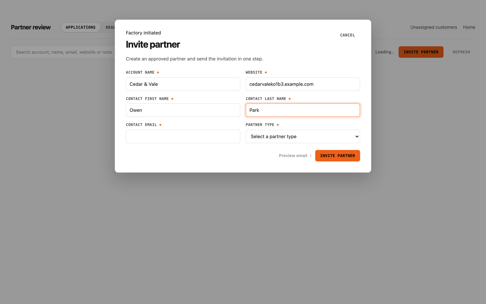 Preview unavailable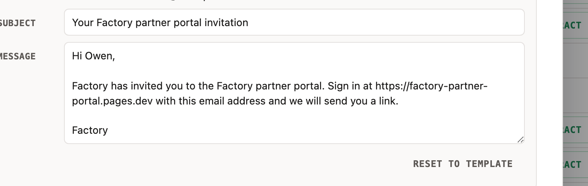 Hi First preview | ||||
| 1.2 | Press Escape, reopen the form, click outside it, reopen it again, then fill it in and send. | Escape and a click outside both close the form. After sending, the toast has no View link, and the new row is highlighted in Decided as Approved with the Invited tag. The Contract cell reads Not sent. | One step creates the approved partner and sends the invitation. | Partner Review, Decided |
 Invited, Not sent Invited, Not sent | ||||
| 1.3 | Open the invite email and follow its link, then sign in with your email and open the sign-in link that arrives. | The invite link opens the portal home. Signing in and following the sign-in link lands you on the dashboard, as the invited partner. | An invited partner reaches the portal and signs in the same way any partner does. | Inbox; browser |
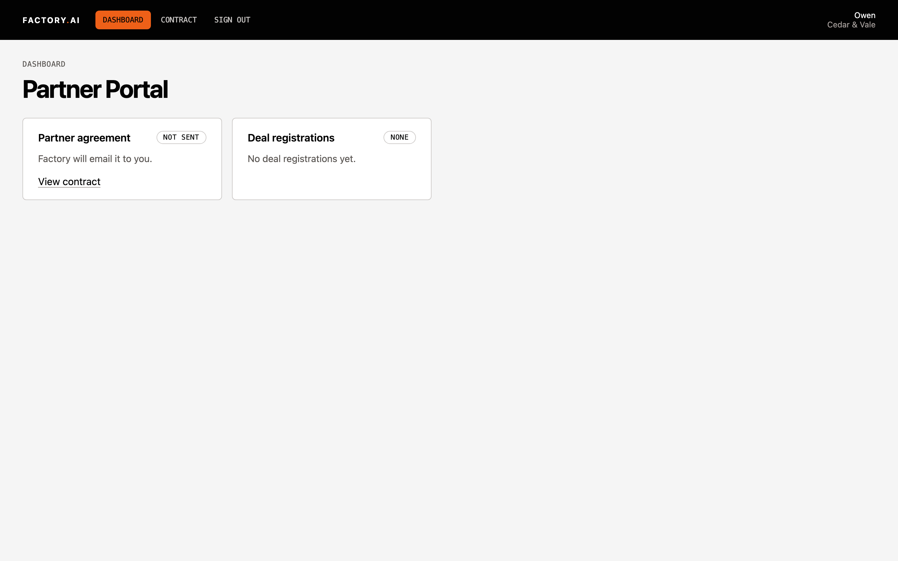 Signed in, dashboard | ||||
02
Contract signing (e-signature link and status sync)
Operator, then partner. Fifteen minutes.
| # | Do | Expect | Proves | Confirm where |
|---|---|---|---|---|
| 2.1 | Decided: on the company from 1.2 click Send contract and confirm. | The confirmation names the contact. The Contract cell changes to Sent in place and the row is highlighted. The toast has no View link. The "ready to sign" email arrives. | Factory sends the agreement from Partner Review. | Partner Review, Decided; inbox |
 Contract Sent Contract Sent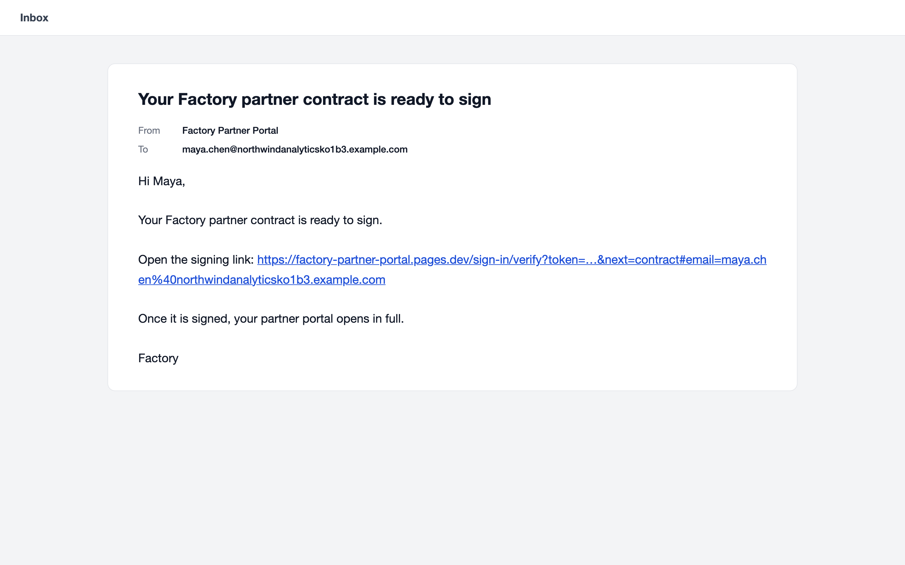 Ready to sign | ||||
| 2.2 | Click the button in the "ready to sign" email. | The Contract page opens already signed in, with status Sent and "Open the agreement to sign". | The email link signs the partner straight in to the contract. | Browser |
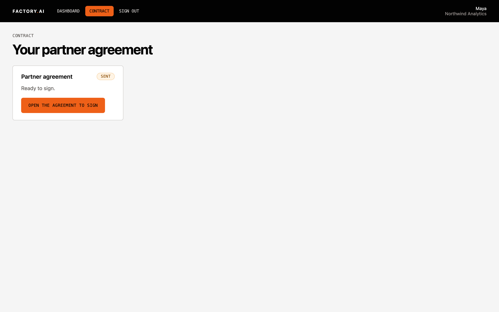 Open the agreement to sign | ||||
| 2.3 | Open the agreement, sign it in DocuSign, then click Finish. | You return to the Contract page. Within about 30 seconds it shows Signed with the signed date. The "contract is signed" email arrives. | Signing through the DocuSign API, with the result sent back to the portal. | Browser; inbox |
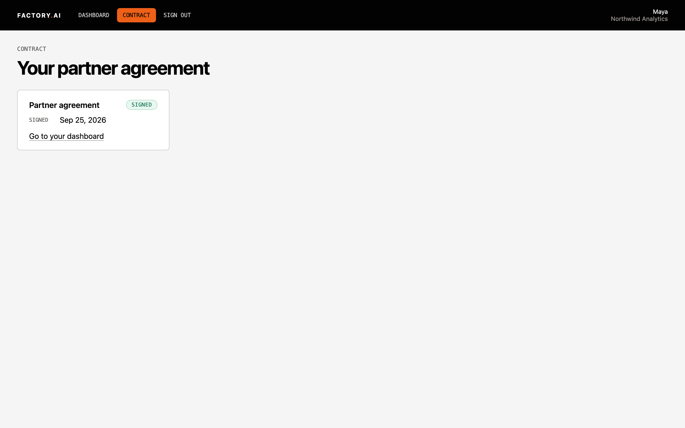 Signed | ||||
| 2.4 | Salesforce: open that company's Account. | Contract Status Signed, Contract Signed At set, Partner Lifecycle Status "3. Activation", and a file named "Partner Contract <company> <date>". | Salesforce updates automatically when signing completes. | Salesforce, Account |
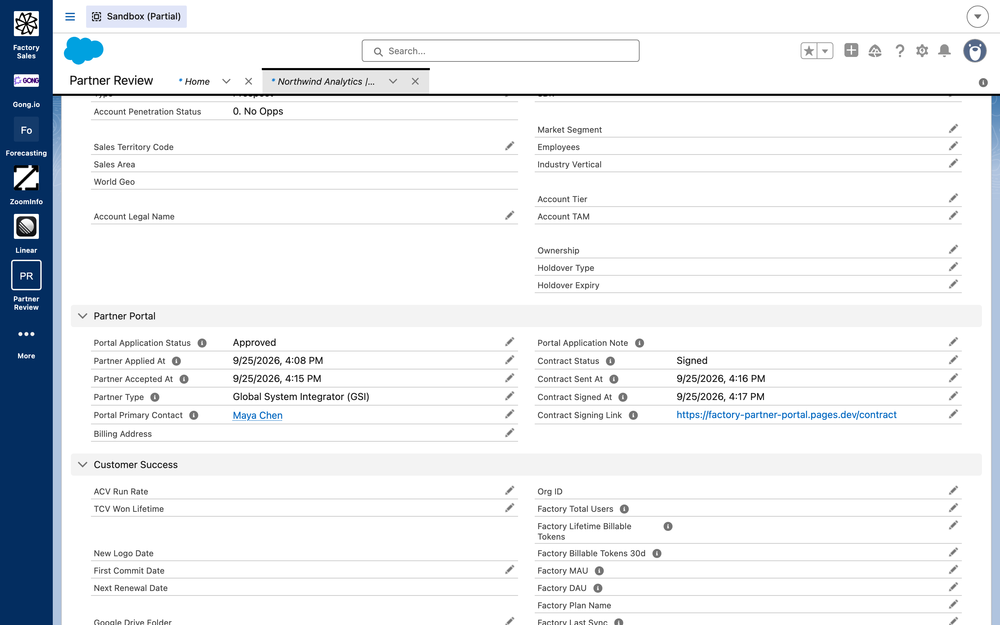 Contract Status: Signed | ||||
| 2.5 | Click the "ready to sign" email button a second time. | The sign-in page opens with your email filled in. The new sign-in link returns you to the Contract page, not the dashboard. | A used contract link can't be reused, and sign-in brings the partner back to the contract. | Browser; inbox |
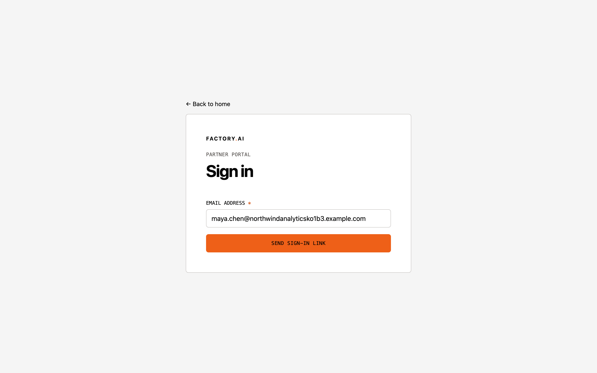 Email prefilled | ||||
| 2.6 | Open the dashboard. | The contract card shows Signed. | The partner sees the contract status. | Browser |
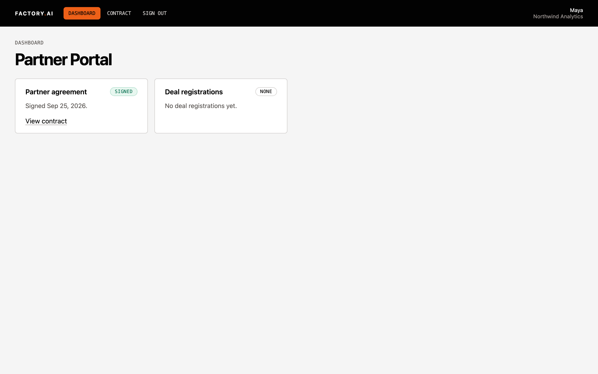 Sign in | ||||
| 2.7 | Invite a second company as in 1.1 and 1.2, send it a contract, and in DocuSign choose Other Options, then Decline to Sign. | Partner Review shows Declined, with Send contract available again. The Account has Contract Declined At set. | A declined agreement is recorded and can be resent. | Partner Review, Decided; Salesforce, Account |
 Declined, resend Declined, resend | ||||
| 2.8 | Decided: look at a row whose contract is Sent and not yet signed. | No resend button on that row. The Contract buttons line up across rows. | Only a declined agreement offers a resend. | Partner Review, Decided |
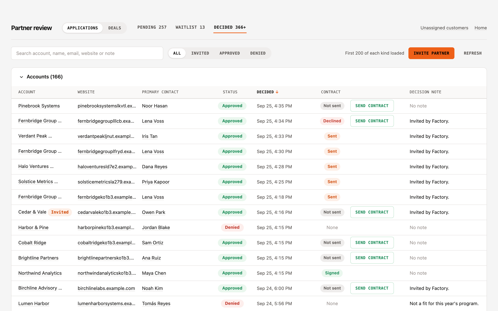 No resend on Sent | ||||
03
Timestamps and audit
Salesforce. Five minutes.
| # | Do | Expect | Proves | Confirm where |
|---|---|---|---|---|
| 3.1 | Salesforce: open the Account from 1.2. | Portal Decided At, Contract Sent At and Contract Signed At are all set, in the order the steps happened. | Each onboarding stage has a timestamp. | Salesforce, Account |
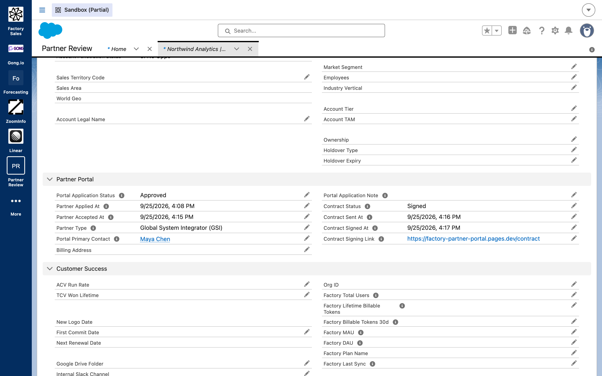 Contract timestamps | ||||
| 3.2 | Salesforce: open the Account of a company that applied and was approved (see Setup). | Partner Applied At and Partner Accepted At are both set, applied first. | Application and acceptance are both timestamped. | Salesforce, Account |
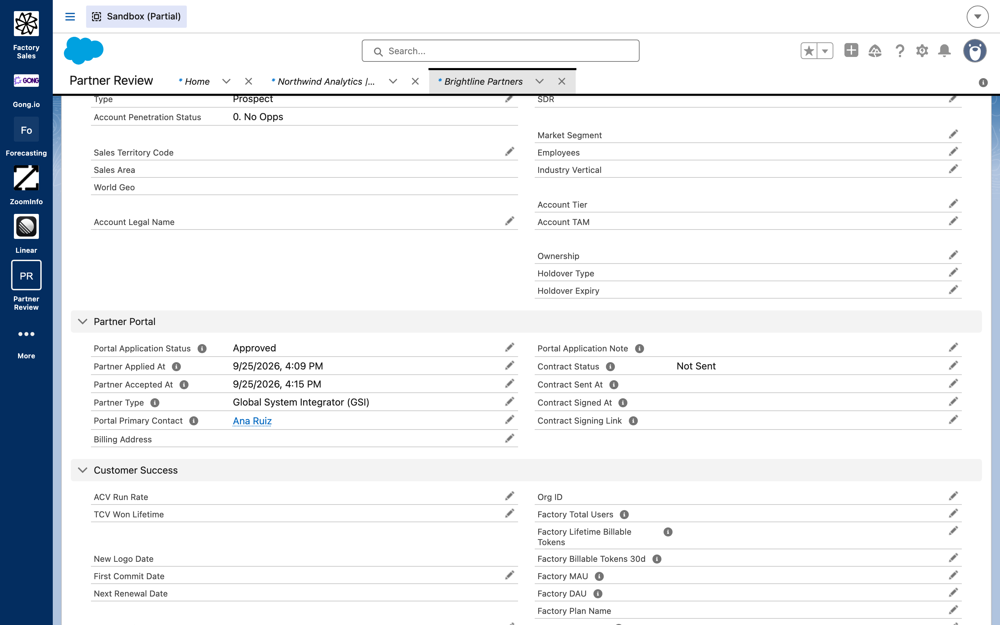 Applied / Accepted | ||||
| 3.3 | Open Portal Audit Log, All, newest first. | One row for each step, including send_partner_contract, contract_webhook (docusign), contract_signed, and sign-in with mode contract_link. No link or token appears in any row. | Every step is audited, and no secret ends up in the log. | Salesforce |
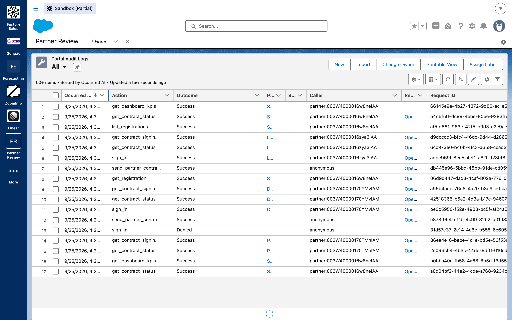 Newest audit rows | ||||
04
After the pass
- Leave the test companies in the sandbox; nothing needs deleting.
- Send findings back as step number plus what you saw.
Notes
- Use a Domestique address. Gmail filters the sandbox sender until factory.ai's email settings list Salesforce, which is on the handoff list.
- DocuSign runs on our developer account with a ten-page placeholder agreement until Factory's plan upgrade. Switching to Factory's account is a settings change.